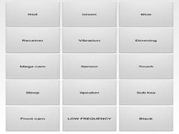
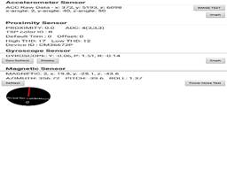
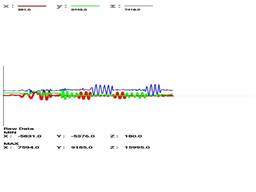
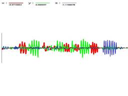
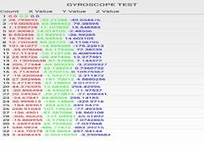
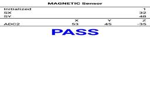
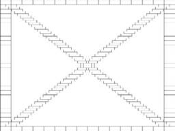

Lab 05 - Measuring Sensors
Overview
As a part of Dr. Mobile's development, engineers and programmers need to know how accurate the sensors, both internal and external, to determine the noise to signal ratio in calibrating and detecting a change to raise event update to the software.
You will need a mobile device to complete this lab or use pre-scanned lab data.
Depending on your phone type, you can:
- Activate the hidden hardware diagnose program.
- From Phone keypad type: *#0*#
- Look up your phone type
- What does it look like:
 - Download a sensor app that will show the different sensor available on your phone
- Android: Google Play: Sensor Lab or Phone Check and Test
- iOS: Phone Diagnostics
- Both: TestM (warning likes facebook info)
- Use any application where you can watch the sensor output. (Be creative). If you want, you could use your laptop or computer sensors. i.e., Windows Voice recorder.
Assignment
Complete the following steps:
Observe SENSOR
Record the program that you are using for this lab.
Pick a sensor, observe the output of the device at rest. Interact with the sensor.
Answer the following questions:
- What is it measuring?
- Determine the normal sensory?
- Determine abnormal, change, or detection state? What caused it?
Create Three Scenarios
Come up with three different ways, activities, or scenarios that you would use the sensor. For example, using the Accelerometer: Sitting, Walking, Running, Riding).
Answer the following questions:
- Determine the measurement criteria, write them down.
- Write down your prediction of what will happen during the activity.
- What are some risks? What side effects could happen?
- What would be considered a successful pass of your scenario? What would be an almost? And not quite?
Test SCENARIOS
Using your observer sensor, test the device in your three scenarios.
Record the results.
- Repeat your scenario until you get all successes.
- Repeat your scenario until you get the almost successes
- Repeat your scenario for not entirely.
Answer the following questions:
Did you have to change the test, your expectation, or the technique?
SUMMARY
Do the following:
- Write an overview of what you learned.
- Include what you used to test the sensor you are testing (What software)
- Include your scenarios and how you tried it
- Include what you determined was successful and what was not.
- Include data or proof that you completed the test: measurements, screen captured, etc
- Post your write-up.
Peer Testing
Read over two of your classmates' scenario summaries. Run the tests as they described them.
Answer the following in a reply post:
- Did you get the same results as your classmate?
- If you didn't, what was the difference?
- If you did, what could be improved?
- Suggest another scenario to test. Provide predictions as to the results.
Submission
Post your summary to the discussion board.
Find two of your classmate's tests and run them. Post your results (with data).
You will be reporting your results in your Ponder assignment. Make sure you record your Lab points.
Rubric
Use the following rubric to help understand the expectation.
|
Exceptional |
Good |
Acceptable |
Developing |
Missing |
Assignment 70% |
Summary |
Test Scenarios |
3 Scenarios |
Observation of Sensor |
No original post |
Reply 20% |
1st & 2nd Reply Peer Testing with answers to questions |
1st Peer Testing 1 with the answers to questions and |
1st Reply Peer Testing 1 with the answers to questions or |
1st Reply Peer Testing 1 |
No Reply |
Professionalism |
The paper is easy to read and communicated. |
Properly cited, there are no grammar or spelling errors, and the writing style is "professional." |
Found an instance of a spelling error, grammar error, incomplete citation, overly verbose wording, poor formatting, or poor writing. |
A citation is missing where one is needed (plagiarism alert!). |
Gross spelling/grammar errors or other aspects of the writing that make the paper difficult to read. |